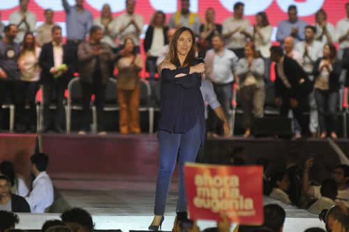

Real Chubut - Agencia de Noticias


En el cierre de María Eugenia Vidal solo faltaron los choripanes

"Ahora nosotros", fue el eslogan que la gobernadora estrenó en su cierre de campaña y que se diferenció del que usa Mauricio Macri. El acto se realizó en Vicente López y contó con la presencia de los candidatos a intendentes.
Solo faltaron los choripanes. María Eugenia Vidal eligió un cierre peronista: en un estadio, con multitudes que ondeaban banderas y la coreaban. La gobernadora bonaerense se paró en una pasarela que partía del escenario y que la ponía entre los nutridos grupos que había aportado cada intendente del conurbano (y que estaban correspondientemente señalizados con los nombres del dirigente local) y dijo: "¡No nos movemos de acá! ¡No me voy a mover ni un centímetro de acá!". Los carteles decían: "María Eugenia no se va". Antes de insistir con que no había que volver al pasado, la mandataria sacó su celular y tomó un video en modo selfie para mandarle al presidente Mauricio Macri, que cerraba en Córdoba. La multitud le coreó: "Hay gato para rato".
Las pantallas y los carteles de fondo decían "Ahora nosotros", y más de un dirigente se preguntó si no debían sido antecedidos por un "Adiós Mauricio". Es que la escena la coparon aquellos dirigentes que están pensando en el posmacrismo y que, de hecho, optaron por tener un cierre de campaña separado de Macri, a diferencia de lo que ocurrió en las PASO, cuando confluyeron todos en un mismo acto. Además de los intendentes del PRO y del radicalismo, Vidal estuvo acompañada por el jefe de Gobierno, Horacio Rodríguez Larreta, y su compañero de fórmula, Diego Santilli.
Al intendente de Vicente López, Jorge Macri, que hizo de anfitrión y aportó buena parte de las multitudes que llenaron el Club Platense, fue al que le tocó abrir. "No sé si puedo hacer un decreto. Los lindos días no son de los peronistas. ¡Son de todos los argentinos!", lanzó ante un cielo muy despejado. "Queremos que el Estado siga siendo manejado por Mauricio y María Eugenia, que lo pusieron al servicio de la gente", sostuvo el primo del presidente, que definió a Vidal como "la mejor gobernadora de la historia de la provincia". "¡Y no se va! ¡Mariú no afloja!", dijo. También se ocupó de saludar a su primo, al que le mandó "un abrazo grande desde la provincia". "¿Quién se imaginaba un Mauricio liderando marchas en todo el país?", comentó más tarde. "Las PASO no definen las elecciones. Aprendimos, entendimos, corregimos y vamos a ganar", aseguró Jorge Macri.
-Se da vueltaaaaa -cantó la multitud PRO.
Luego el intendente tuvo un momento de sinceridad: "Algunos vamos a ganar el domingo y otros vamos a perder -dijo- pero vamos a continuar". Lo escuchaban los intendentes de Quilmes, Martiniano Molina; de Morón, Ramiro Tagliaferro; de Tres de Febrero, Andrés Valenzuela; de Pilar, Nicolás Ducoté, y de La Plata, Julio Garro, todos con pronóstico reservado desde su derrota en las PASO.
Le siguió el ministro de Seguridad y primer candidato a diputado, Cristian Ritondo, que comenzó golpeando: "Somos un equipo. No nos juntamos a ganar una elección después de que nos dijimos de todo", lanzó en alusión al binomio del Frente de Todos. "Vengo escuchando lo de 'vamos a volver'. ¿Para qué quieren volver? ¿Para seguir conviviendo con las mafias? ¿Para mandar a los barras a los mundiales? ¿Para que haya más pactos con Irán? ¿Para reconocer a Maduro como presidente democrático? Solo quieren volver para tener poder", concluyó Ritondo, que llamó a "romper la urna de votos. Busquen votos hasta abajo de la tierra. ¡Que ganen los buenos!".
El radical Daniel Salvador siguió en la misma línea: "Hay una reacción social para no volver al pasado", aseguró. El vicegobernador llegó a comparar "la gesta" de Macri con la campaña de 1983 de Raúl Alfonsín, algo que Vidal luego repetiría.
La gobernadora salió como una rockstar, a pura sonrisa. La multitud bailaba bajo el ritmo de un jingle que decía que "ella no está sola" y elogiaba sus obras. Caminó por la pasarela y dedicó buena parte de su discurso a hablar de su gestión. Fue construyendo microrelatos por los que dijo que fueron los vecinos los que definieron sus políticas: el combate al narcotráfico, las obras contra las inundaciones (hizo eje en las de La Plata), las rutas, el límite a las reelecciones indefinidas y la reforma judicial. "Si hicimos todo eso, si fuimos el Gobierno de las obras, ¿cómo no vamos a poder ser el Gobierno del trabajo y del crecimiento?", se preguntó.
Vidal sostuvo que "los últimos dos años no fueron fáciles. No lo sé por el voto del 11 de agosto, sino porque estuve ahí". "Quiero decirles que escuchamos y estamos dispuestos a mejorar. ¡Pero no es para atrás!", aseguró en una de sus muy escasas alusiones directas a sus adversarios. También sostuvo que el 12 de agosto les ganó la desazón: "Empezó la rebelión de los mansos. En la calle no se veía alegría. ¿Será cierto que perdimos y que es el final?", preguntó. Y la multitud le contestó: "Nooooo". El domingo le contestan los bonaerenses.
Fuente: Página 12